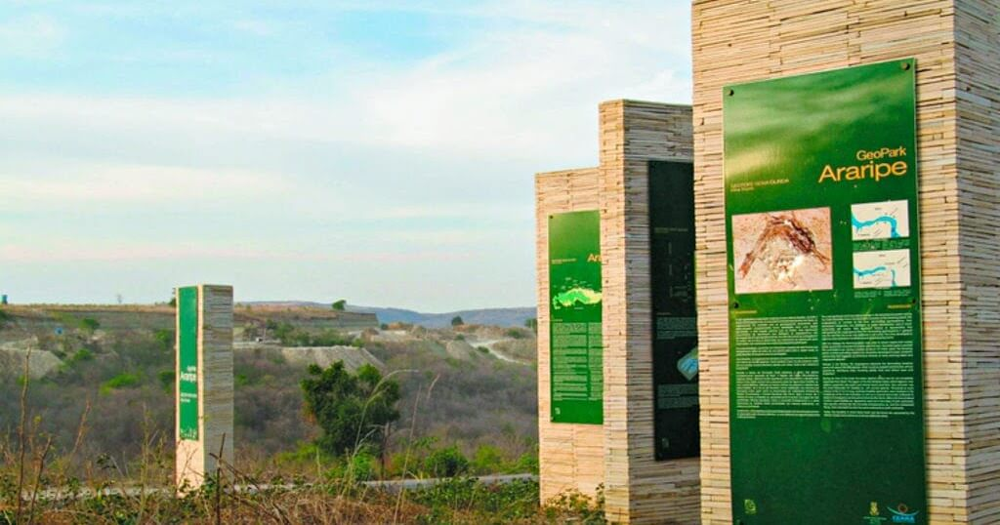
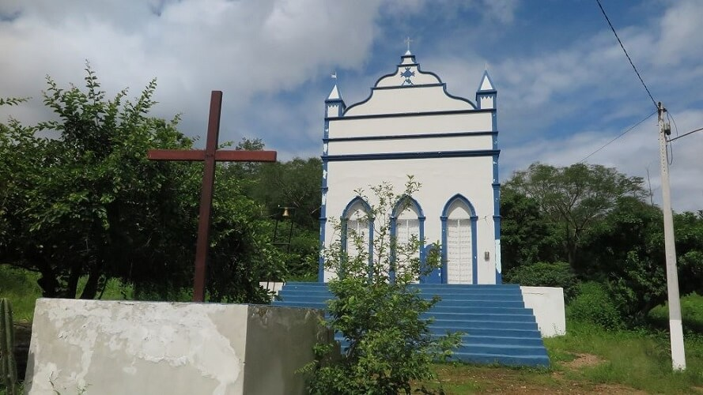
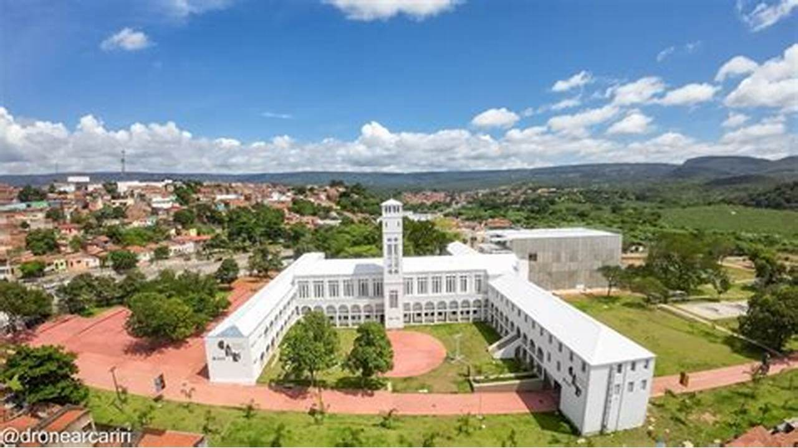
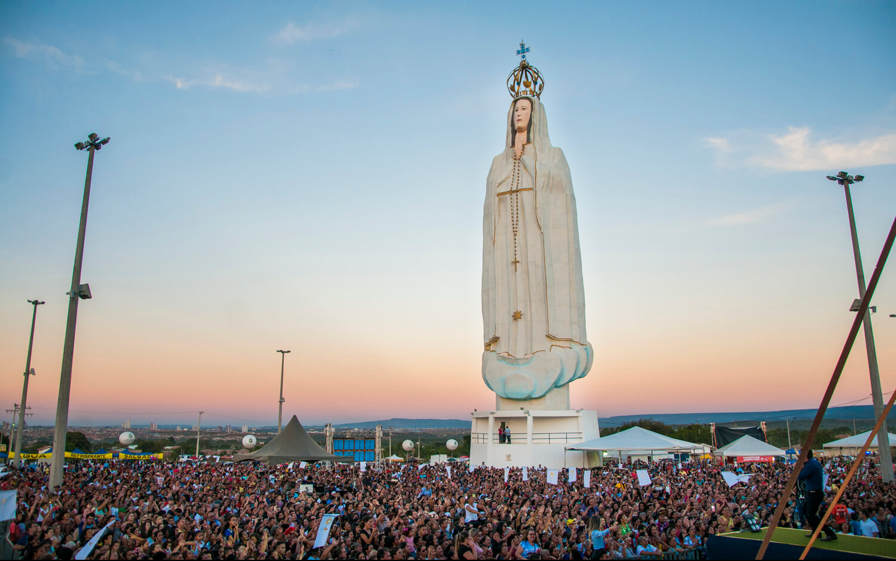

INÍCIO
CRATO
JUAZEIRO DO NORTE
BARBALHA
Pontos Religiosos
Pontos Turísticos
Restaurantes e Bares
Hotéis e Pousadas

Geopark Araripe
Mais Informações
Mais Informações
Balneário Serrano Atlético Cratense
Mais Informações

Caldeirão de Santa Cruz do Deserto
Mais Informações

Centro Cultural do Cariri
Mais Informações
Mais Informações
Parque Estadual Sítio Fundão
Mais Informações
Mais Informações
Geossítio Batateiras
Mais Informações
Casa Ninho de Teatro
Mais Informações
Mais Informações
Centro Cultural do Araripe - RFFSA
Mais Informações
Clube Recreativo Grangeiro
Mais Informações

Horto de Nossa Senhora de Fátima
Mais Informações
Mais Informações